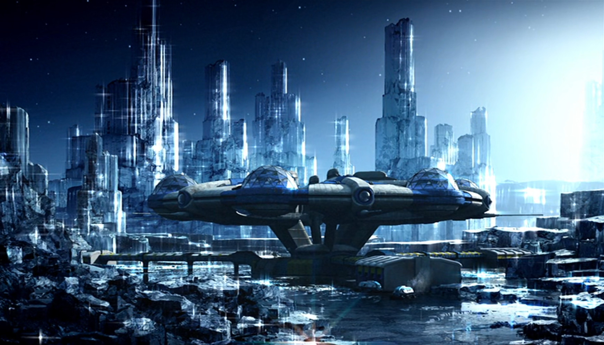
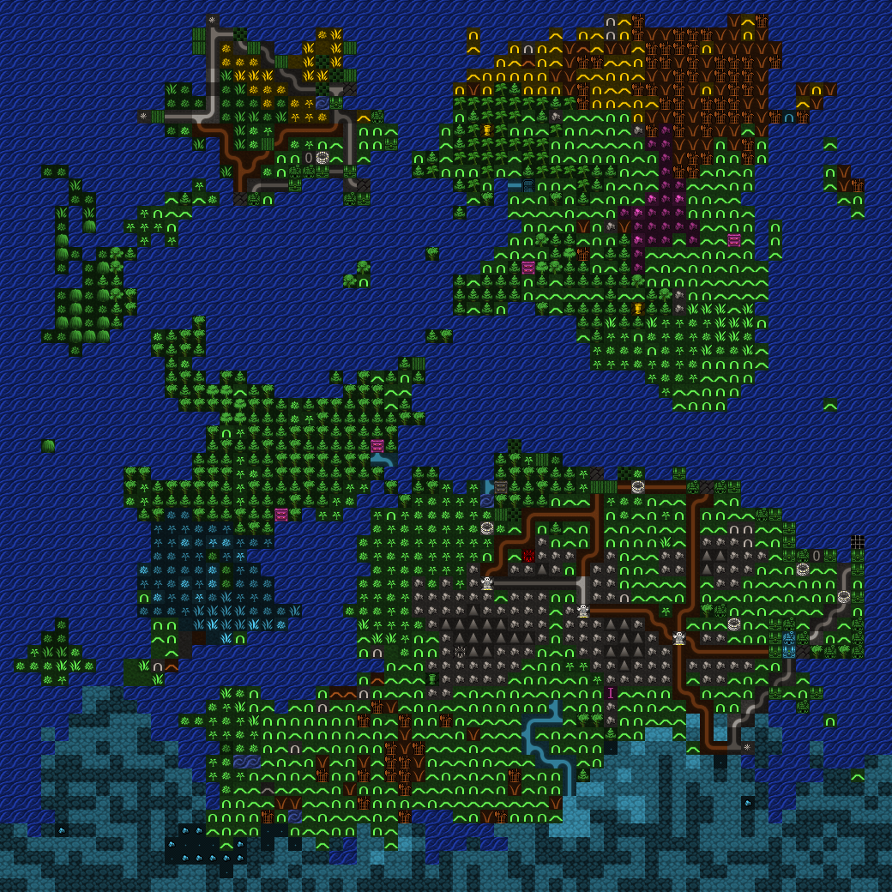
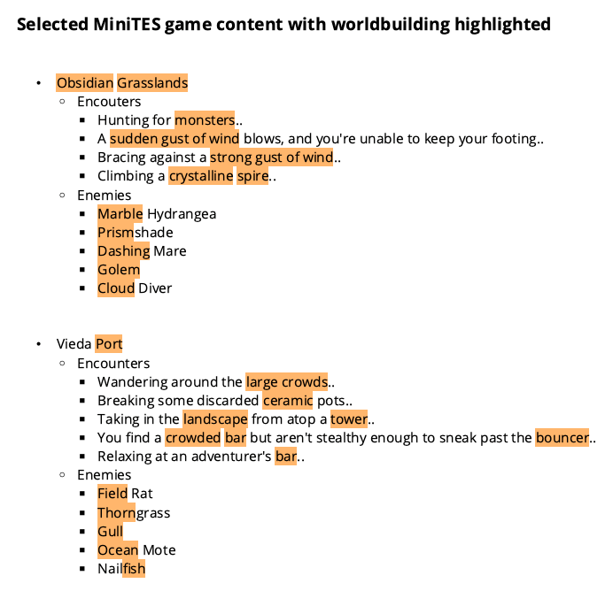

MiniTES was a text based idle game that I developed in 2013. It was a demake of The Elder Scrolls III: Morrowind, but I knew from the beginning that I wanted to build my own setting rather than borrow the world of Vvardenfell. Although I had done worldbuilding twice before, this was the first game where I intended for it to be a major part of the player's experience and not just a tool for creating content.
My plan was to build a setting no one had ever seen before by mixing two genres that don't normally go together. Half of this equation would be Morrowind's 'continent and cities' model so I needed something else that would provide contrast.
During this time I had been catching up on past Doctor Who seasons and I came across the episode, Midnight. Most of the episode took place indoors, but it also had some beautiful landscape shots and I thought this planet (without all the manmade technology) would be perfect as a creative seed for MiniTES. So that was the first step done: the game would feature a Morrowind-esque civilization that lived on a planet with an environment normally found in sci-fi.
To make most of the game content I decided to use curated randomization. This remains one of my favorite creative methods and it came from my experience in producing music. I found that any software synthesizer that has a 'randomize all' button could create interesting, unique, and high quality sounds if I was willing to roll the dice enough times. It's something that took little effort and for me it produced equal, if not better creative results than working with a specific goal in mind. I just had to be flexible enough to be able to run with whatever best results the randomization created.
The first use of randomization was MiniTES's world map, which was created in the freeware game Dwarf Fortress. Dwarf Fortress is an extremely deep roguelike game and one of its features is a fantasy world generator.
My only criteria for randomization was that I wanted a map that could fit nicely into a text window with the same dimensions as cmd.exe's default size. After about 20 minutes I generated a map where the top half was almost perfect for what I was looking for. From there I converted it to ASCII by hand, making some minor changes along the way. This is what the final version looked like, followed by the original randomized map:
You can download a playable copy of this Dwarf Fortress world at the bottom of this page. Please note that you'll need the 2013 version of the game (DF 0.34.11, also linked below) to run it.
Next, I found some free online tabletop game randomizers that I could use to build up the details of my game world. Most of MiniTES's location names and descriptions were designed this way, with the remaining few being written manually. I would often change a couple things or merge results to make the randomizer outputs fit better. Here are some examples and details that were included in the final product:
Camua: A luminous world of crystalline spires and silver oceans, beneath clouds of flame. The plane is populated by living spells (and ghosts of the past?). The plane is the prison of a powerful warlock (or something else?), bound by chains of magical ice. It is also the location of the ruins of Siruvan, an ancient and forgotten transplanar city. It is also the location of Ardan, a planar trading city filled with magical gates.
Deadmoor Tower: This concentric castle appears deserted, but is inhabited by a poor charcoalmaker named Cyni and his family.
Madras: It is governed by a council of elders, whose bizarre laws and decrees are commonly ignored.
At this point, my content randomization process had to be put aside for some more difficult work. MiniTES was going to be a game with no graphics, no sound, and minimal text. And I had to somehow communicate all the worldbuilding details to the player within these constraints. This was an especially important task because my goal was to create something completely new; I didn't want to throw in a bunch of goblins/orcs/trolls and rely on common knowledge of Tolkien or D&D.
To accomplish this I wrote most of the ingame text by hand and planted worldbuilding clues everywhere that I could: encounter text, console messages, monster names, equipment, key items, map locations, etc. Even the game's default darkmode color palette had a purpose: MiniTES's planet was supposed to feel like night all the time and this would put the player in the same mental state.
In the end I think this mixed approach worked out well. Complete randomization can have quality control issues and applying some curation to the results lets you cover up that weakness while retaining most of the benefits. MiniTES is one example of what kind of game can be created this way.
Doctor Who - Series 4 Episode 10 trailer